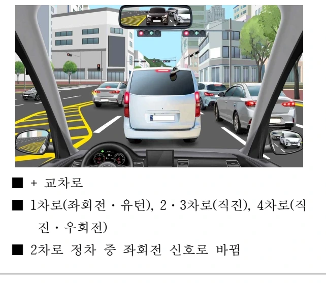

788. Bạn muốn rẽ trái trong tình huống sau. Hai cách lái xe nào là nguy hiểm nhất?

- ①Bật đèn nháy khẩn cấp, đi qua khu vực an toàn, tiến vào làn đường số 1 rồi rẽ trái.
- ②Tiến vào làn đường rẽ trái rồi bám sát xe trước nhất có thể và nhanh chóng rẽ trái.
- ③Khi chuyển hướng sang làn đường số 1, phải chú ý xe đi theo phía sau.
- ④Chuyển sang làn đường số 1 ở vạch nét đứt màu trắng rồi rẽ trái.
- ⑤Khi chuyển làn đường sang làn đường rẽ trái, cần chú ý đến xe ở ngay phía trước.
Xem đáp án
Đáp án
① Bật đèn nháy khẩn cấp, đi qua khu vực an toàn, tiến vào làn đường số 1 rồi rẽ trái.
② Tiến vào làn đường rẽ trái rồi bám sát xe trước nhất có thể và nhanh chóng rẽ trái.
Căn cứ
Biển báo khu vực an toàn cho biết có chướng ngại vật trên đường hoặc cần phải đảm bảo an toàn và bạn không thể đi vào khu vực này. Vì vậy bạn không nên lái xe vượt qua vùng an toàn. Ngoài ra, khi chuyển hướng phải bật xi nhan trước, kiểm tra trước sau, trái phải và chuyển sang làn đường chấm trắng. Ngoài ra, khi chuyển hướng, xe phía trước hoặc phía sau bạn có thể đổi hướng nhanh chóng trước xe của bạn, vì vậy hãy cẩn thận với các xe phía trước và phía sau bạn. Trường hợp trên làn đường có thể rẽ trái, quay đầu xe cùng lúc, xe phía trước có thể quay đầu xe nên cần lái xe phòng thủ bằng cách rẽ trái nhưng vẫn đảm bảo khoảng cách an toàn.
Phần căn cứ là bản dịch máy để tham khảo.